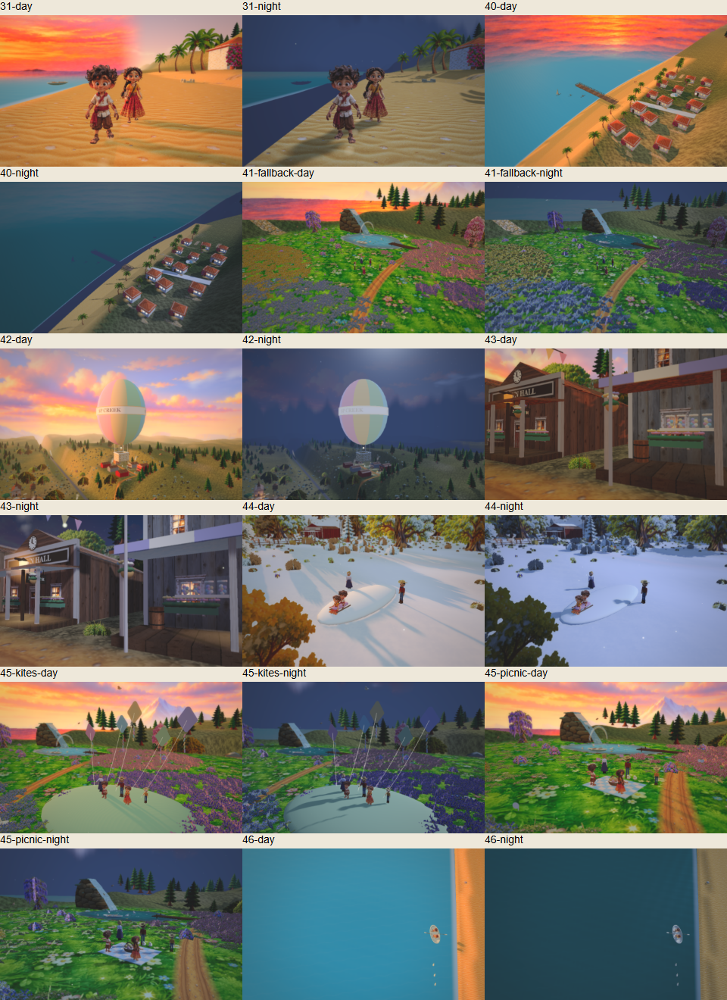

SP Creek — saved review
Foundation-stage previews from tasks 31 and 40–47. These are working previews; the final reference-art pass remains ahead.
Open the 3D world
In the world, open Ready-made videos for Snow day, Kite day, Picnic by the waterfall and Episodes 10–13. Watercolour is an optional preview in the art-style selector.
Verification snapshot
Latest full suite: 1900 checks + 2 startup reload checks passed, across 30 suites. The reviewed app checkpoint is 2fd7bcc. No new app changes were made for this page.
Normal and no-model static versions each passed 132 day/night poses and 14 short dry walking checks. All 96 camera views passed clearance.
Full-suite counts · Normal-world review evidence · Static fallback evidence
Animated-film day and night
Click the sheet to open the full-size image.

Still open
Passing tests do not resolve these visual findings. The full written report is tasks/SELF-REVIEW-3.md; the style direction and proposed timeline are in tasks/STYLE-TIMELINE.md in the checkout.